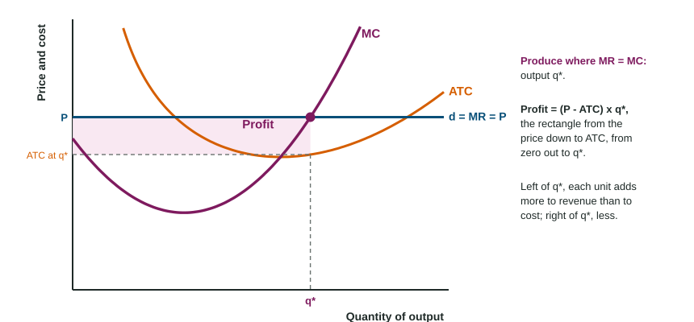

A pottery sells every mug it makes for $20; one small shop cannot change the market price. It could make three mugs a day, or seven. Making more brings in more revenue, but each extra mug also costs more to make. The best output is found one mug at a time: keep going while the next mug adds more to revenue than to cost. That is marginal analysis from Unit 1, applied to a firm.
Marginal revenue
Marginal revenue (MR) is the extra revenue from selling one more unit: . Average revenue (AR) is revenue per unit, TR / Q.
When a firm sells every unit at the same market price, each extra unit adds exactly that price to revenue, so MR = P, and revenue per unit is also P. On a graph the firm's demand curve is a horizontal line at the price, and it is also its MR and AR curve: label it d = MR = AR = P. (Topic 3.7 explains which firms face this flat demand; Unit 4 covers firms whose MR differs from price.)
The profit-maximizing rule: MR = MC
Profit is total revenue minus total cost. To make it as large as possible, compare each unit's marginal revenue with its marginal cost:
- If MR > MC, the unit adds more to revenue than to cost: make it.
- If MR < MC, the unit adds more to cost than to revenue: do not make it.
- So produce where MR = MC. With a table, where MR and MC rarely match exactly, produce the last unit whose MR is at least its MC.
Worked example: the pottery's table. Total cost for 0 to 7 mugs is $30, 42, 50, 60, 74, 92, 116 and 146. Each mug sells for $20.
- MC (change in TC, one mug at a time): 12, 8, 10, 14, 18, 24, 30.
- MR = $20 for every mug.
- Compare. Mugs 1 to 5 have MC ≤ 20, so each adds to profit. The sixth has MC = 24 > 20: it would lower profit by $4. Produce 5 mugs.
- Profit. TR = , TC = 92, profit = $8. Check: ATC = and dollars.
Two slips to avoid: stopping where MC is lowest (2 mugs), and going on to the first mug where MC is above MR (6 mugs).
Profit on the graph

On a firm graph, find the profit-maximizing quantity where the MR line crosses the rising part of MC. Then read ATC straight up or down at that quantity. Profit = (P - ATC) x q*: a rectangle whose top edge is the price, whose bottom edge is ATC at q*, and whose width runs from zero to q*. Shade it fully. Readers take the point away when the rectangle is drawn at the output where ATC is lowest instead of at q*.
| Area on the firm graph | Top edge | Bottom edge | Width |
|---|---|---|---|
| Total revenue | price | zero | 0 to q* |
| Total cost | ATC at q* | zero | 0 to q* |
| Profit (if P > ATC) | price | ATC at q* | 0 to q* |
When the price changes
If the price rises, the MR line moves up and crosses MC at a larger output: the firm moves up along its MC curve. If the price falls to the lowest point of ATC, the best output earns zero economic profit (P = ATC): the break-even point. Below that, the firm makes a loss at its best output. Whether it should still produce is the question of Topic 3.6.